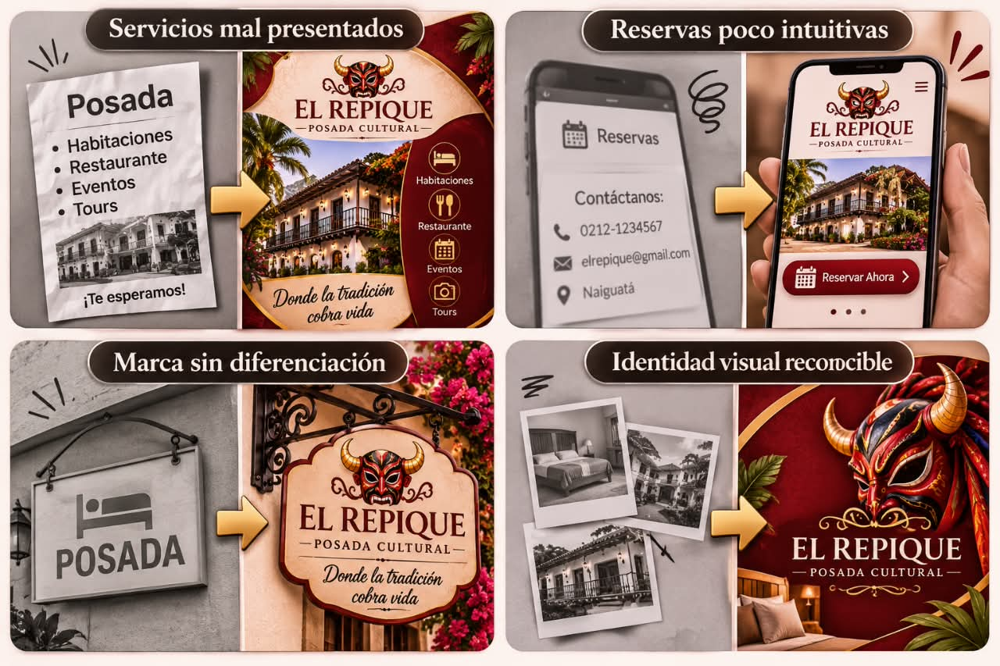
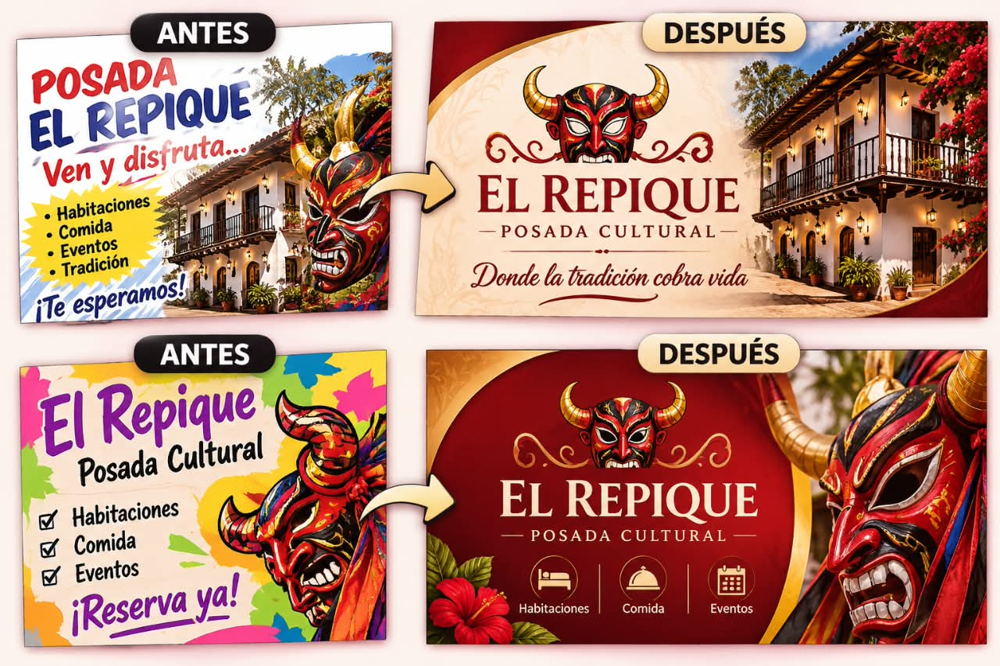
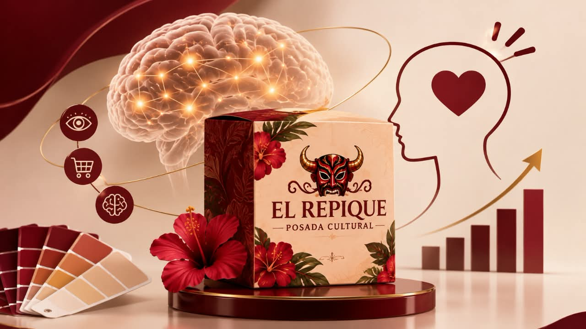
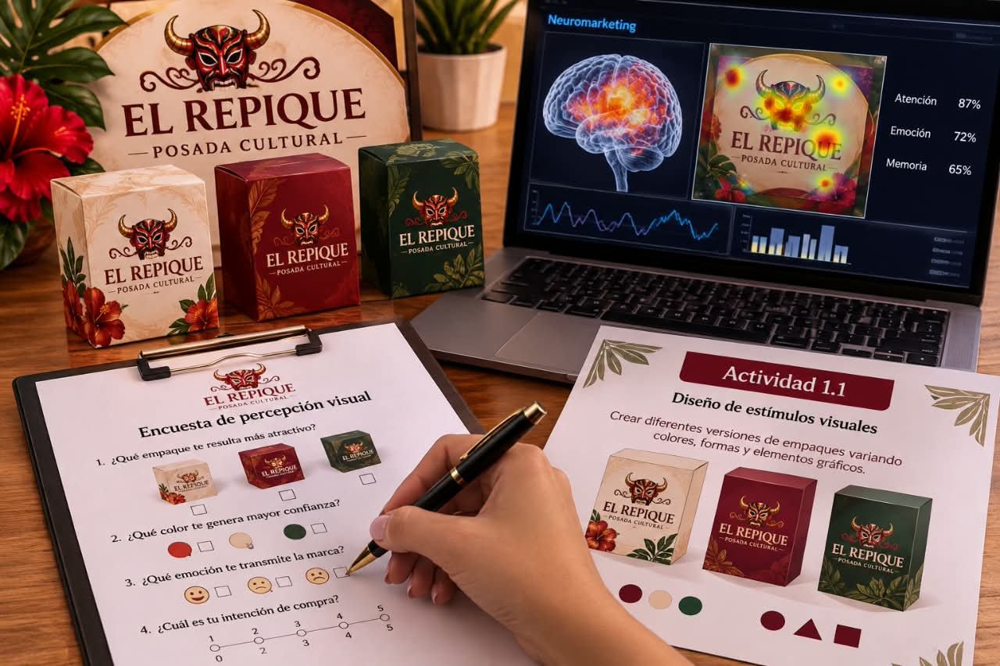
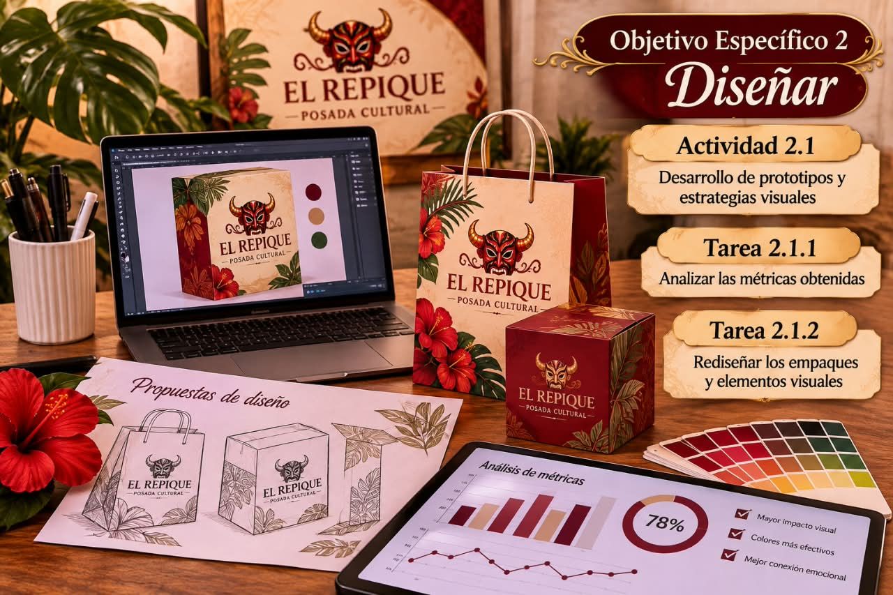
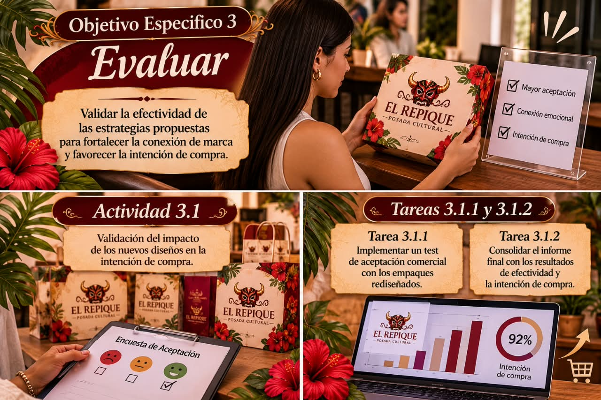

Neuromarketing Visual: Impacto del Color y la Forma en la Intención de Compra de los Clientes de una Posada en Naiguatá, Estado La Guaira
Diseño de estrategias de comunicación visual fundamentadas en métricas científicas de neuromarketing para sustituir intuiciones subjetivas y fortalecer la conexión emocional y comercial en el punto de venta.
Dificultad para Captar la Atención en Mercados Saturados
Se manifiesta directamente en:
• Baja efectividad en los puntos de venta.
• Rendimiento deficiente en campañas publicitarias.
• Estancamiento en las decisiones de compra.
Diseños por Intuición y Desconexión Neurobiológica
• Uso de empaques y estímulos basados en intuiciones subjetivas en lugar de métricas científicas.
• Desconexión con la respuesta neurobiológica del cliente.
• Falta de análisis del color y la forma en el subconsciente.
Riesgo Comercial de no Corregirse
Las marcas continuarán experimentando:
• Mermas continuas en sus ventas.
• Pérdida de posicionamiento frente a la competencia.
• Deterioro progresivo en las preferencias del consumidor.
Diagnóstico con Métricas de Neuromarketing
Resulta imperativo diagnosticar las respuestas emocionales actuales con neuromarketing para diseñar estrategias visuales optimizadas que maximicen la intención de compra real.

Frenar la Pérdida de Ventas y Posicionamiento en el Mercado
Las marcas en mercados saturados presentan baja efectividad en puntos de venta y estancamiento de ventas por usar diseños basados en suposiciones, desconectados de la respuesta neurobiológica del cliente. Resulta urgente actuar para frenar la pérdida de ventas y posicionamiento frente a la competencia.
Sustituir Intuiciones Subjetivas por Métricas de Neuromarketing
Este proyecto es una estrategia fundamental para transformar la comunicación visual de las marcas, cuya importancia radica en sustituir las intuiciones subjetivas por métricas científicas de neuromarketing, asegurando el éxito en los puntos de venta y la preferencia del consumidor.
Aumentar la Intención de Compra Real Conectando con el Subconsciente
Implementar esta propuesta ofrecerá estrategias visuales optimizadas que aumentan la intención de compra real mediante una comprensión profunda del impacto del color y la forma en el subconsciente, logrando una reactivación comercial y una conexión efectiva con el comprador.

Desconexión Visual y Bajo Estímulo
• Fachada deteriorada y colores deslavados que no captan la atención visual en el punto de venta.
• Letrero genérico sin identidad cultural ni jerarquía.
• Resultado: Nula activación emocional y estancamiento en la intención de reserva.
Conexión Neurobiológica y Cultural
• Color y Luz: Tonos cálidos (crema, carmesí colonial, ámbar y verde botánico) que generan hospitalidad inmediata.
• Forma y Símbolo: Máscara de los Diablos Danzantes de Naiguatá retroiluminada.
• Resultado: Alta recordación e intención de compra.
«Diseñar una propuesta de estrategias de comunicación visual basadas en métricas de neuromarketing, mediante el análisis de las respuestas emocionales y perceptivas de los consumidores ante los colores y las formas de los empaques y estímulos visuales, con el propósito de fortalecer la conexión entre las marcas y sus consumidores y favorecer la intención de compra en los puntos de venta.»
Diseñar estrategias visuales basadas en métricas de neuromarketing.
Analizar respuestas emocionales ante colores y formas de empaques.
Fortalecer la conexión de marca y favorecer la intención de compra.
Carmesí Colonial: Captura la atención visual en menos de 300 ms, activando emoción, energía ritual (Diablos Danzantes) y urgencia de compra.

Diagnosticar las respuestas emocionales y perceptivas actuales de los consumidores ante los colores y las formas mediante la recolección de datos con métricas de neuromarketing.
Ejecución de pruebas de diagnóstico visual con los consumidores seleccionados.
Diseñar los estímulos visuales (empaques con variaciones de color y forma) para la evaluación.
Aplicar las pruebas de neuromarketing y registrar las respuestas perceptivas y emocionales de los participantes.


Diseñar nuevas propuestas de estrategias de comunicación visual basadas en el análisis de la conducta del consumidor frente a los empaques.
Desarrollo de prototipos y estrategias de comunicación visual optimizadas.
Analizar las métricas obtenidas para identificar las combinaciones de color y forma con mayor impacto.
Rediseñar las propuestas de empaques y elementos visuales según los hallazgos del estudio.
☑ Mayor impacto visual · ☑ Colores más efectivos · ☑ Mejor conexión emocional.
Evaluar la efectividad de las estrategias propuestas para fortalecer la conexión de marca y favorecer la intención de compra real en el mercado.
Validación del impacto de los nuevos diseños en la intención de compra.
Implementar un test de aceptación comercial con los empaques rediseñados frente al público objetivo.
Consolidar el informe final con los resultados de efectividad y la intención de compra medida.
☑ Mayor aceptación comercial · ☑ Conexión emocional fortalecida

Posada en Naiguatá, Edo. La Guaira
Delimitado a una posada ubicada en Naiguatá, estado La Guaira (El Repique — Posada Cultural), donde se evalúa la influencia de los estímulos visuales en la percepción y comportamiento del consumidor.
Período de Un (1) Mes
El estudio se llevará a cabo durante un período de un mes, correspondiente al tiempo establecido para la recolección sistemática y el análisis de los datos.
Comunicación Visual y Neuromarketing
Influencia de colores, formas y diseños sobre la atención, percepción, emociones e intención de compra, mediante encuestas, pruebas con consumidores y neuromarketing.
Propuesta Estratégica Adaptada
Fundamenta una propuesta de comunicación visual adaptada a la posada, sin abarcar implementación comercial a gran escala ni evaluación de ventas a largo plazo.
Toca cualquier imagen para verla en pantalla completa
«Transformando la intuición subjetiva en estrategias visuales que conectan con la emoción, la identidad cultural y el subconsciente del consumidor.»
Neuromarketing Visual: Impacto del Color y la Forma en la Intención de Compra de los Clientes de una Posada en Naiguatá, Estado La Guaira
Caso de Estudio: El Repique — Posada Cultural · Naiguatá, Estado La Guaira.